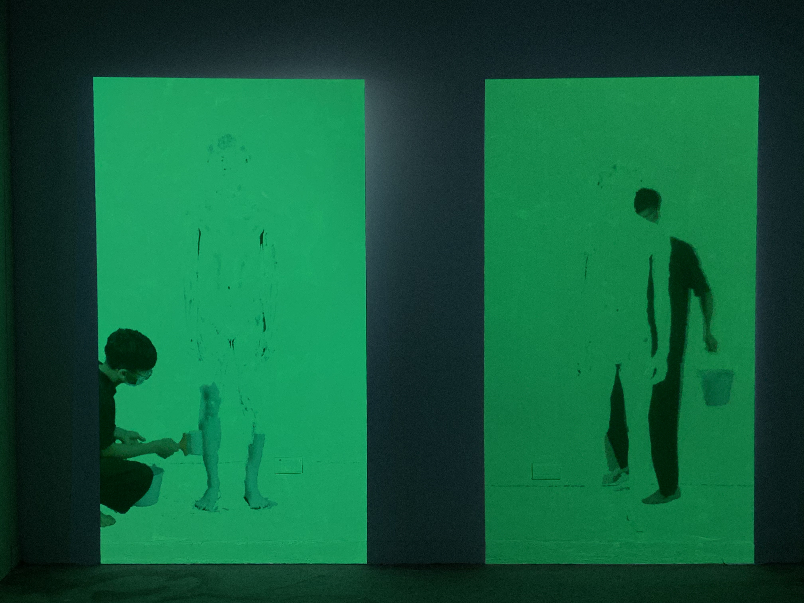
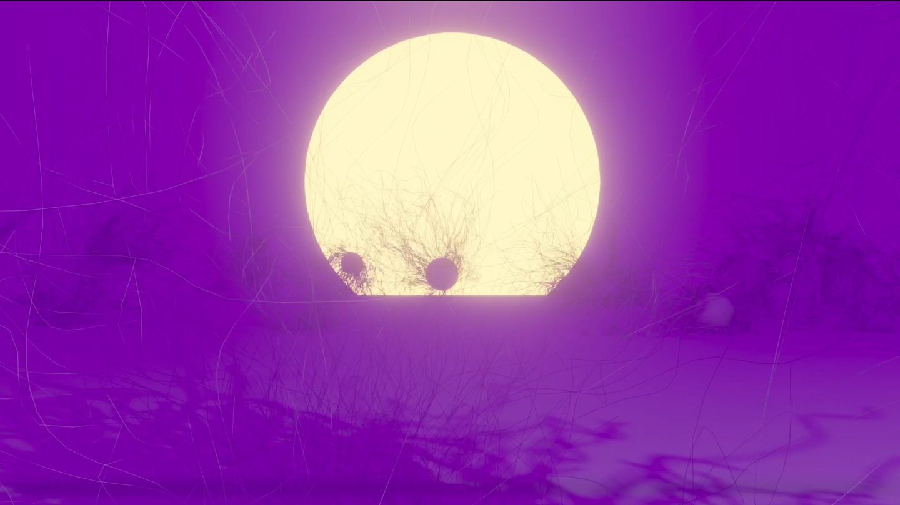

黃煜翰 | Huang Yu-Han


Software Skill
- Adobe Photoshop
- Adobe Premiere
- DaVinci Resolve
- Figma
- Adobe After Effect
- Coach Potato
Experience
- 國立台灣藝術大學 美術學系2018~2022
- 東隅工作室成員2020~2022
- 大師美術 專任老師 2020~2022
- 2019 王陳靜文藝術創作獎 入選
- 2022 臺藝大美術學系師生美展 佳作
- 2022 美術學院三系聯合創作展『空景』展出
Work


- 
- 